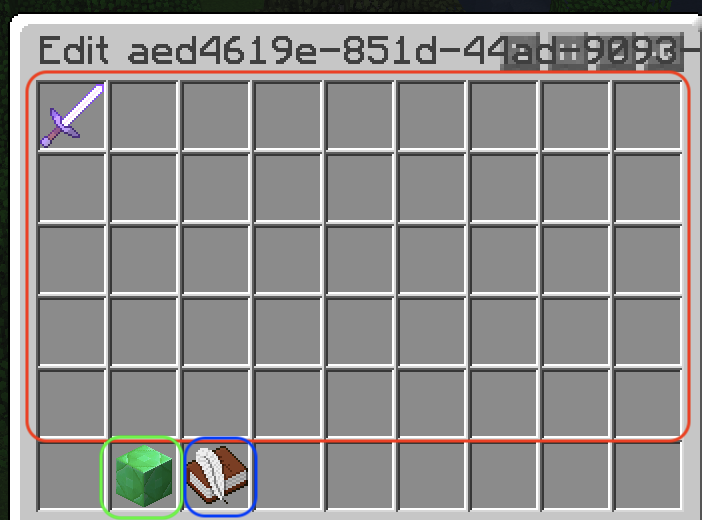

Known issues
- The replacements do not appear in alphabetical order and the order in which they are listed is different every time
Loot items
In order to add any given items to a loot table, they must first be registered as a Loot Item. This is what allows the items to have their metadata (such as names, enchants, lore, and other NBT data) preserved, as well as to set the chance that an item will appear as a percentage. This percentage is input as a number from 0.0 to 1.0, such that 75% would be input as 0.75. Any given item can be registered multiple times with different chances, to allow for scenarios where an item has a different chance of appearing depending on the loot table ()Example
A creeper should have a 50% chance to drop a diamond, and a villager should have a 10% chance to drop a diamond.
This scenario would require you to register a diamond Loot Item twice, once with 50% chance, and another with 10% chance. These would then be separately added to the CREEPER and VILLAGER loot tables
Registering loot items
Registering a new loot item is very simple. First, get the item you wish to add, and hold it in your main hand in-game. Then, run the command /editloottable registerhand [chance], where chance is a number from 0.0 to 1.0 with the chance that the item will appear when generating it in a loot table.
Note: Registering an item does NOT make it begin generating. It must first be added to a loot table. See Add new loot table items to learn how to create a loot table and add a loot item. The permission node customloot.edit is required to register an item.
Accessing the GUI
You can access the GUI by running the command/editloottable gui.
Legend

Loot table selection area
Page selection buttons
Create new loot table button
Note that the buttons at the top are just a mod I have installed in my game to sort chests and is not a part of the plugin!
From the GUI, you can edit the loot tables you have created, or create a new one. If you've created more than can fit on one page, you can use the arrows to flip through the pages. Click on a loot table to edit what it replaces (See Replacing loot tables) and the loot items it can generate. You can also create new loot tables from here.
Loot tables
A loot table is what chooses the loot that appears in cases where loot is generated, such as mob drops and naturally generating chests. You can create a new loot table in the GUI. To edit a loot table's item pool (the items that can appear when )Legend - Editing a loot table
Item pool of this loot table. Note that you cannot add items to the loot pool by moving items in to this area from your inventory, you must add items registered as loot items. Any items moved into this area will get deleted. You can see the loot item's chance of appearing as well as its UUID when you hover over it. You can remove items from the loot pool by right clicking on them. They will remain available to be re-added in the add new items menu.
Add items to loot pool. Click this option to see the items that you could add to the loot pool that aren't already there. Click items to add them. You can see the items' chance of appearing and UUID when you hover over them.
Set the replaced loot table. See Replacing loot tables to learn what the options in this means.
Replacing loot tables
The replaced loot table setting is what determines what mob drops are or naturally generating loot chests contain. Despite being called "replace", the replacement does not overwrite the original loot generated, but rather adds to it.Special replacements
There are two special replacement types. These are * and NONE. The NONE replacement is used to remove the replacement from the loot table, as once a replacement is set, it cannot be removed from in-game.
The * replacement allows you to specify a global loot table to apply to everything.
Note that other loot tables with a replacement to the the same loot generated, or if there is multiple loot tables with the same replacement, a random loot table will be selected. This is unintended behaviour, and may be changed in a later update.
Add new loot table items
You can add registered loot items to a given loot table through the GUI, by selecting the loot table, and then Add New Item, and choosing an item from the list. Only items that are not already part of that loot table will be shown to be able to be added.Technical information
Upon creating a new custom loot table, a UUID is randomly assigned to it, and this UUID is used to identify entries in the config files. In the custom_loot_tables.yml file, each top-level key corrosponds to a custom loot table's UUID. In the sub-keys of each top-level UUID key, there exists two sub-keys, those being item_pool and replaces.
The <uuid>.replaces key contains a given loot table's "replaces" value, that being either a vanilla loot table, or an entity type. The entity type enum also contains other non-mob entities, such as arrows, thrown ender pearls, and end crystals, however (most of) these special entities do not trigger an EntityDeathEvent when despawning, thus it should not be a possibility that arrows despawning generates loot.
Loot items are stored in a simlar way to loot tables, being that they are assigned a UUID that is used to identify them in the config, for which each loot item entry in the config contains it's chance and a serialized ItemStack, although the amount is currently discarded and, loot items, when generated, always generate exactly one item.
The loot items' UUIDs are what is used to identify which loot items are in each loot table, with <uuid>.item_pool in the custom loot tables config file containing an array of UUIDs corrosponding to loot items in their config file.
The method for retrieving a loot table upon an entity's death or a chest's loot generating goes through the entire list of custom loot tables registered, and checks if the entity type of the mob killed or the loot table of the chest being generated matches that of the custom loot table being examined, or *. This leads to the unintended behaviour that it can be a matter of what order it goes through the entries of whether the loot table set to replace * or a specifically designated one is chosen. This same behaviour is what decides which loot table to use should multiple loot tables be set to replace the same thing.